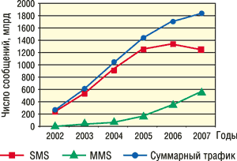
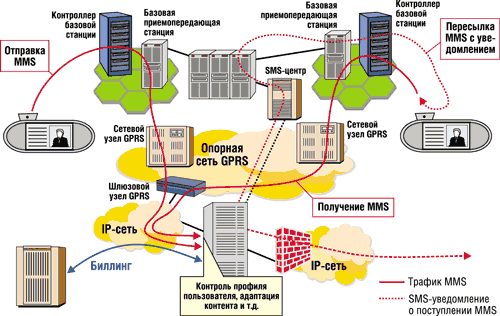
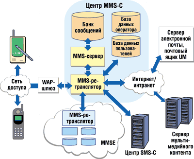

Галина Большова
Последние несколько лет услуги мобильной речевой связи постепенно теряют доминирующую роль, уступая позиции другому сервису - передаче данных, популярность которого растет день ото дня. Вначале это была служба SMS (Short Message Service) для обмена короткими буквенно-цифровыми комбинациями длиной до 160 знаков. Затем этот рубеж был преодолен, и появилась услуга EMS (Extended Message Service), позволяющая увеличить объем передаваемой информации за счет объединения множества коротких сообщений в одно. И, наконец, им на смену пришла новая услуга - MMS (Multimedia Message Service), функциональные возможности которой не ограничиваются передачей текстов. Чего ждут операторы и пользователи от MMS, и с какими проблемами они столкнутся?
Достойные предшественницы
Первые SMS-сообщения появились в эфире более 10 лет назад, однако подлинный успех пришел к этой службе в начале нового века, когда была достигнута "критическая" масса пользователей, породившая лавинообразный рост трафика. Своей популярностью технология SMS во многом обязана не только простоте предоставляемого сервиса, но и его дешевизне. Именно эти качества позволили привлечь на рынок мобильной связи наиболее активную категорию абонентов - молодежь. Для них короткие сообщения длиной до 160 знаков (140 байт) оказались идеальным способом общения.
В 2003 г. мировыми лидерами по количеству отправленных SMS стали китайцы - свыше 220 млрд сообщений. Не случайно именно в этой стране появился даже первый SMS-роман из 60 коротких глав, сочиненный писателем Кан Фу Чаном. Рекордсменом же по рассылке SMS стал один немецкий тинейджер, отправивший их на кругленькую сумму в 80 тыс. евро. Но привычка к общению с помощью SMS-сообщений уже становится довольно опасным заболеванием, приводящим, по мнению немецкого психотерапевта Андреаса Хертера, "к умственной деградации молодежи".
Однако у технологии SMS есть и свои проблемы. Первая, как уже упоминалось, - размер сообщения не должен превышать 160 символов. Другая проблема связана с организацией передачи трафика. Известно, что трафик SMS передается по каналу сигнализации, а это имеет как свои плюсы, так и минусы (табл. 1). Преимущество здесь в том, что данные могут приниматься даже во время сеанса голосовой связи, а недостаток - в ограниченной пропускной способности узкополосного канала сигнализации.
Таблица 1. Эволюция услуг передачи данных в сетях мобильной связи
| Функциональные возможности | Тип передаваемых сообщений | ||
| SMS | EMS | MMS | |
| Накопление и пересылка в нереальном времени | Да | Да | Да |
| Подтверждение доставки | Да | Да | Да |
| Тип сообщений | Персональные | Персональные | Персональные |
| Поддерживаемая среда передачи | Текст | Расширенный текст | Текст, речь, видео |
| Механизм доставки | Канал сигнализации | Канал сигнализации | Канал трафика данных |
| Протокол | Специальный для SMS, например, SMPP | Общий для Интернета, например, MIME | |
| Платформа | SMS-центр | SMS-центр | MMS-центр |
| Приложения | Текст (100-200 знаков) | Расширенный текст, аудио, анимация, рисунки, форматирование текста | Текст, видео, аудио, неподвижные изображения |
| Абонентские терминалы | Все модели сотовых трубок | Услуга возможна в отдельных моделях | Ожидается широкое распространение, подобно SMS |
Попытка преодолеть досадное ограничение на размеры сообщения привела к появлению службы передачи расширенных сообщений - EMS, которая позволила мобильным абонентам обмениваться не только длинными текстовыми сообщениями, но и картинками, и даже анимированными изображениями. Кроме того, технология EMS позволяет форматировать текст - изменять стиль и размер шрифта, выравнивать его. Тарификация EMS-услуги так же проста, как и SMS, поскольку фактически учитывается количество коротких сообщений, входящих в групповой EMS-пакет.
Заметим, что, хотя данная технология "упаковки" отдельных сообщений в одно и позволила преодолеть ограничения на размер сообщения, сама служба EMS была реализована на базе существующей сетевой SMS-инфраструктуры. Все мультимедийные расширения (мелодии, рисунки, анимация и т. д.) запоминаются в UDH-заголовке, а информация передается в нормальной текстовой области короткого сообщения. EMS поддерживает три формата черно-белых изображений: малый (16х16 пикселов), большой (32х32 пиксела) и формат переменного размера (зависит от типа трубки, но не превышает 96х94 пиксела).
Однако по мере увеличения объемов трафика сообщений возникает опасность перегрузки как SMS-центра (транслирующего весь поток неречевых сообщений), так и каналов сигнализации. В связи с этим дальнейшее развитие служб SMS и EMS в рамках существующей инфраструктуры таит в себе серьезную угрозу сети - ведь огромный поток пусть даже коротких сообщений может парализовать работу всей системы, которая изначально не была рассчитана на столь высокую дополнительную нагрузку.
MMS: снаружи и изнутри
Служба мультимедийных сообщений - MMS, призванная обновить ограниченные сервисы SMS и EMS, способна пересылать сообщения не только с одного телефона на другой, но и с телефона на адрес электронной почты, что позволяет расширить рынок потребителей услуг мобильной связи за счет корпоративных пользователей. Напомним, что корпоративный сектор рынка практически не проявил интереса к SMS-услугам, так как для этих пользователей важнее был более эффективный и оперативный способ информационного обмена - речевая связь.
Принцип передачи MMS внешне схож с SMS. Но первый обеспечивает пересылку как сообщений любой длины, так и текстовых и аудиофайлов, фотоснимков, графических изображений, цветных рисунков, видеороликов, ТВ-изображений, а в будущем обещает "транслировать" даже кинофильмы. У технологии MMS огромный рыночный потенциал, а ее бизнес-модель, судя по динамике роста (рис. 1), весьма привлекательна. Согласно прогнозам, трафик SMS-сообщений достигнет максимума в 2006 г., после чего начнется его спад. С этого момента ожидается резкий всплеск интереса к MMS.
|  | Рис. 1. Динамика роста трафика SMS- и MMS-сообщений. Источник: Nokia.
|
Первоначально мультимедийный сервис планировалось реализовать в 3G-сетях, однако их развитие задерживается, и потому операторы обратились к технологии GPRS-WAP, которая стала сегодня основной средой для передачи мультимедийных сообщений длиной до 30 Кбайт. Теоретически сервис GPRS способен обеспечить скорость передачи до 171 кбит/с, однако реальная скорость в радиоканале не превышает 40 кбит/с. Лишь при появлении полнофункциональных 3G-сетей скорость передачи MMS может возрасти до 2 Мбит/с.
Принципиальное отличие MMS от SMS заключается в способе доставки контента сообщения. В сети GPRS мультимедиа-сообщения передаются в пакетном режиме по протоколу WAP, т. е. по информационным каналам, а уведомление абоненту о поступлении MMS-сообщения доставляется в виде традиционного SMS-сообщения (рис. 2). Такое решение позволяет сохранить существующую архитектуру сети GSM/GPRS и обеспечить новый сервис с существенно более высокой скоростью, чем при передаче SMS-сообщений.
|  |
| Рис. 2. Архитектура MMS в сети GPRS. Источник: Nokia.
|
Для архитектуры сетей нового поколения предложена иная сетевая инфраструктура, известная как среда мультимедийных сообщений - Multimedia Message Service Environment (MMSE). В нее войдут MMS-ретрансляторы и MMS-серверы, операторские и пользовательские базы данных, а также MMS-агент пользователя, серверы электронной почты и факсимильных сообщений и другое оборудование для поддержки "полной" мультимедийности службы.
Центральный элемент этой архитектуры - MMS-центр (MMS-C), который играет роль механизма аккумулирования, временно накапливая поступившие сообщения всех типов и отправляя их абоненту лишь тогда, когда тот становится доступен для связи. Ключевой элемент MMS-C - MMS-сервер, отвечающий за получение, маршрутизацию и рассылку MMS-сообщений их адресатам. MMS-сервер по протоколу TCP/IP подключается к MMS-ретранслятору согласно схеме взаимодействия клиент-сервер. В функции MMS-ретранслятора входит обработка входящих и исходящих сообщений и передача их различным службам, в том числе факсимильной, электронной почты и т. д. Конструктивно сервер и ретранслятор MMS могут быть выполнены как единый сетевой элемент или могут существовать как независимые устройства. Для пересылки MMS на сотовые телефоны предусмотрен WAP-шлюз (рис. 3).
|  | Рис. 3. Архитектура MMS в сетях 3G. Источник: Ericsson.
|
Важную роль выполняет и программный MMS-агент пользователя, с помощью которого обеспечивается консолидированный доступ к множеству прикладных программ (посредством элементов единой сетевой инфраструктуры). Сведения о профиле пользователей и их местонахождении хранятся в одной или нескольких специализированных базах данных.
Архитектура MMS допускает наличие одного или нескольких мультимедийных центров MMS-C. Более надежной считается мультисреда, в которой для передачи разных видов MMS-трафика используются выделенные MMS-C. Такое решение позволяет более эффективно управлять разнородным MMS-трафиком, а также вести учет передаваемых сообщений и проводить биллинговые операции раздельно для каждого вида трафика.
Несколько слов о телефонах с поддержкой MMS. Пользователь может сам создавать в них профиль предоставляемых услуг (например, вводить ограничения на определенные типы MMS-вызовов и т. п.). Такой профиль запоминается в базе данных сети и в дальнейшем служит руководством программе-диспетчеру, какие мультимедийные сообщения немедленно пересылать абоненту, а какие оставить на сервере "до востребования". Словом, производители оборудования постарались сделать новую услугу как можно более привлекательной.
Факторы риска
Массовый спрос на новую услугу определяют два фактора: наличие поддерживающих MMS терминалов и содержимое мультимедийного сервиса. Первая из проблем, можно сказать, успешно решена. На рынке (в том числе и на российском) уже представлен широкий ассортимент новых моделей сотовых телефонов, способных работать с MMS (со встроенной цифровой камерой или без нее), хотя и здесь есть некоторые дополнительные "проблемки роста". Что же касается содержимого, то рыночные реалии таковы, что ни один из предлагаемых в рамках MMS сервисов пока не смог стать тем killer application, поиск которого активно ведут операторы.
Первоначально считалось, что наиболее популярным приложением станет пересылка фотоснимков, однако востребованность этой функции так и не достигла своего пика. В поисках "хита" ряд европейских операторов пытаются создать смешанный поток информации (новости, спорт, гороскопы, эротика и т. д.) в надежде, что он "подсадит на иглу" MMS разные категории абонентов. Для операторов важно не только заполучить молодежный рынок, но и создать привлекательные приложения для разных возрастных групп. К сожалению, готовых рецептов здесь нет. Ясно одно - нужны сбалансированные решения, позволяющие учесть интересы всех категорий пользователей, а не только тинейджеров.
Кроме того, крупные операторские компании уже поняли, что самостоятельно разработать или накопить привлекательный для "широких масс" контент им явно не по силам. Обращение же к подрядчикам связано с усложнением взаиморасчетов и, что в цивилизованных странах гораздо важнее, с соблюдением буквы закона в области авторских прав на этот самый контент - музыку, видеоролики, фильмы и т. п. Увы, даже на Западе таких поставщиков контента можно, что называется, по пальцам пересчитать.
Вернемся к "проблемкам" абонентских терминалов. Суть их в том, что сотовые телефоны с поддержкой MMS, как и следовало ожидать, оказались функционально более насыщенными и, соответственно, гораздо более сложными в употреблении, чем традиционные трубки. В итоге проявился известный "эффект сложных устройств", когда абонент в силу отсутствия специальных навыков использует лишь весьма ограниченное число реализованных в модели функций. Так, по данным оператора Orange (Великобритания), более 80% абонентов пользуются только 10% потенциальных возможностей своих телефонов.
Очевидно, чтобы услуги MMS стали массовыми, нужно в первую очередь "перестроить" сознание абонента. В Европе к этому вопросу подошли серьезно: появились специальные обучающие компании (Orange Learn и т. д.), в штат магазинов по продаже телефонов были введены консультанты, организованы консультации через Интернет.
Другим серьезным препятствием для "массовости" MMS стала несовместимость телефонных аппаратов разных поставщиков. В "пылу сражений" забыли о главном: важно не только поддерживать функционирование максимального количества моделей MMS-трубок, но и гарантировать их функциональную совместимость.
Не решены и вопросы взаимодействия MMS-телефонов со "старым" парком средств. Один из возможных выходов - обеспечить прием MMS-сообщений от абонента с трубкой нового поколения на старые модели в упрощенном виде. Однако такое решение потребует адаптивного преобразования форматов MMS-сообщений разных платформ. А здесь подстерегает следующая неприятность: даже малейшие изменения в пользовательском интерфейсе требуют обновления ПО каждого абонента.
Очевидно, что пока "незрелость" технологии, особенно реализованной в системах 2,5G, явно налицо. Тем не менее желание "снять сливки" собирает под знамена MMS все больше и больше операторов (приведенный в табл. 2 список далеко не полон).
Таблица 2. Сервисы MMS у операторов связи Европы
| Страна | Оператор | Поставщик оборудования | Дата начала предоставления |
| Австрия | Mobilkom | Logica | 06.06.2002 |
| T-Mobile (max.mobil) | Ericsson | 16.05.2002 | |
| Бельгия | Proximus | Ericsson | 12.08.2002 |
| Великобритания | T-Mobile (One2One) | Ericsson | 16.05.2002 |
| o2 | Nokia | 18.06.2002 | |
| Vodafone | Ericsson | 16.01.2002 | |
| Orange | Nokia | 12.08.2002 | |
| Венгрия | Pannon | Nokia | 15.08.2002 |
| Westel | Ericsson | 19.04.2002 | |
| Германия | D2 Vodafone | Ericsson | 16.01.2002 |
| E-Plus | LogicaCMG | 24.03.2003 | |
| o2 | Nokia | 18.06.2002 | |
| T-Mobil | Ericsson | 16.05.2002 | |
| Голландия | KPN Mobile | LogicaCMG | 24.03.2003 |
| Orange (Dutchtone) | Nokia | 31.03.2003 | |
| o2 | Nokia | 18.06.2002 | |
| Vodafone | Ericsson | 16.01.2002 | |
| Греция | Cosmote | Nokia | 09.09.2002 |
| Panafon Vodafone | Ericsson | 16.01.2002 | |
| Дания | Orange | Nokia | 20.12.2002 |
| Sonofon | Openwave | 07.01.2003 | |
| Telia | CMG | 19.08.2001 | |
| Ирландия | Eircell Vodafone | Ericsson | 16.01.2002 |
| o2 | Nokia | 18.06.2002 | |
| Исландия | Iceland Telecom | Ericsson | 16.10.2002 |
| Испания | Telefonica Moviles Group | Nokia | 04.06.2002 |
| Vodafone Airtel | Ericsson | 16.01.2002 | |
| Италия | Omnitel Vodafone | Ericsson | 16.01.2002 |
| Telecom Italia Group | CMG | 20.11.2002 | |
| TIM | Ericsson, Nokia | 04.06.2002 | |
| Литва | Omnitel | Nokia | Нет данных |
| Люксембург | Tango | Symsoft | Июль 2002 |
| Норвегия | NetCom (Telia) | CMG | 19.08.2001 |
| Telenor | CMG | 04.07.2001 | |
| Польша | Centertel | Unisys | 19.02.2003 |
| Plus | Nokia | 29.08.2002 | |
| Португалия | TMN | CMG | 03.04.2002 |
| Vodafone (Telecel) | Ericsson | 16.01.2002 | |
| Россия | Вымпелком | Ericsson | 13.05.2002 |
| МегаФон | Nokia | 01.10.2002 | |
| МТС | Nokia | 12.05.2003 | |
| Румыния | Romania SA | Nokia | 13.01.2003 |
| Сербия | Mobtel | Ericsson | 06.06.2002 |
| Турция | Telsim | Oksijen Technology | 17.07.2002 |
| Turkcell | Ericsson | 18.07.2002 | |
| Украина | Ukrainian Mobile Communications | Nokia | 01.11.2002 |
| Финляндия | Alands Mobiltelefon | Wiral | 02.12.2002 |
| Sonera | Nokia | 11.07.2001 | |
| Telia | CMG | 19.08.2001 | |
| Telia Mobile | Nokia | 30.12.2002 | |
| Франция | SFR | Ericsson | 16.01.2002 |
| Orange | Ericsson | 06.09.2002 | |
| Чехия | Eurotel | Nokia | 15.07.2002 |
| Швеция | Europolitan Vodafone | Ericsson | 16.01.2002 |
| Tele2 | Symsoft | 22.11.2002 | |
| Telia | CMG | 19.08.2001 | |
| Швейцария | Orange | Nokia | 30.10.2002 |
| Эстония | EMT | Ericsson | 27.01.2003 |
| Источник: http://amobile.ru | |||
Биллинг и контент-провайдеры
Своей популярностью услуга SMS во многом обязана предельно простой схеме биллинга, при которой отправитель платит по фиксированной ставке за каждое сообщение. Переход к MMS неизбежно породит ряд серьезных проблем, связанных с оплатой, поскольку по своей природе сервисы MMS значительно сложнее и разнообразнее, и уже ясно, что сохранить ту же простоту биллинговых систем не удастся.
Многие связывают успех MMS с гибкой ценовой политикой, прозрачной для пользователя. Так, некоторые европейские операторы начисляют оплату по твердой ставке - 0,39 евро за сообщение объемом 30 Кбайт (фотоснимок) или 0,99 евро за мультимедийное сообщение в 100 Кбайт (видео). Один скандинавский оператор успешно использует в MMS модель биллинга с переменной ценовой шкалой для различных типов MMS - 10 центов, 50 центов, 1 евро и т. д.
Однако такие модели слишком упрощены и не годятся в более сложных случаях, когда требуется стимулировать абонентов к приобретению сервиса за счет "бесчисленного множества предложений". По всей видимости, понадобятся более гибкие схемы оплаты, когда в расчетах за неголосовые услуги будут учитываться время суток, объем и формат загружаемой информации и другие параметры. Как это сделать, пока неясно. Есть лишь удачные или неудачные попытки, основанные на пробных моделях биллинга. Фактически система расчетов за MMS сегодня лишь начинает разрабатываться, причем методом проб и ошибок.
В настоящее время специализация компаний в отрасли сотовой связи подходит к такому уровню, что операторам не только становится невыгодно разрабатывать сервисы самостоятельно или даже покупать готовые решения, но и, как уже отмечалось, просто некогда заниматься "смежным" бизнесом. Ясно и другое: когда объем новых сервисов достигнет некоей "критической массы", их централизованная поддержка станет технически столь же сложной, сколь и поддержка баз знаний - а это дело специалистов совсем другой отрасли.
По мнению ряда западных аналитиков, в данной ситуации оператору лучше ограничиться предоставлением транспортных услуг, а разработку MMS-сервисов начинки "делегировать" сторонним организациям, особенно когда речь идет о новых, еще плохо обкатанных технологиях. И многие зарубежные операторы (например, Orange и T-Mobile) следуют этим советам.
Однако в России развитием неголосовых услуг занимаются преимущественно сами операторские компании, что обусловлено прежде всего зачаточным состоянием отечественного рынка MMS-услуг. Все технологические новинки на нем лишь пробуются, а потому и у российских контент-провайдеров нет серьезных бизнес-мотиваций для разработки и поиска специального MMS-контента, который еще считается экзотикой.
Проблемы с MMS-контентом испытывают не только российские, но и европейские операторы, хотя у последних это проблемы иного рода. Там сторонние контент-провайдеры не только предоставляют "начинку" услуги, но и занимаются маркетингом и "раскруткой" MMS-сервисов на рынке, привлечением новых клиентов. В такой схеме наиболее деликатный вопрос связан с распределением прибыли от услуг, обусловленных уже не одним, а многими источниками.
Несколько лет назад многие западные операторы начали успешно применять для службы SMS так называемую реверсивную систему биллинга при расчете со сторонними операторами. По всей видимости, такой же механизм начислений станет основным и при расчетах за услуги MMS, только цепочка распределения прибыли будет многозвенной и значительно усложнится. И тогда особенно критичной окажется способность биллинговой системы обеспечить быстрые расчеты с поставщиками контента. Естественно, абонент должен сохранить "свою привилегию" - получать ли единый счет на оплату всех сервисов или записи на каждую произведенную транзакцию.
Технически, согласно архитектуре MMS, все биллинговые функции возложены на центр передачи мультимедийных сообщений (MMS-C), который поддерживает такие функции, как определение тарифа по разветвленной тарифной сетке после авторизации сервиса и осуществление транзакций.
Индекс инноваций
Бурное развитие неречевых услуг на рынке сотовой связи привело к появлению нового понятия - индекс инноваций, который определяет уровень доходности оператора от неречевых сервисов.
В Европе этот показатель в 2003 г. в среднем достиг 20%, в России, естественно, он ниже. Так, по итогам IV кв. 2003 г. доход "Би Лайн GSM" от неголосовых сервисов составил 12%, а в I кв. 2004 г. - уже 15%. Анализ распределения доходов (табл. 3) показывает, что доля прибыли от услуг SMS и MMS (пока доходы от SMS более чем на порядок превосходят доходы от MMS) составляет 44% от всех доходов от неречевых услуг и около 7% от общей прибыли. В Москве и Санкт-Петербурге этот показатель чуть выше, в регионах - несколько ниже. По данным агентства Pyramid Research, к 2006 г. доходы от передачи SMS и MMS составят уже 15% от общей прибыли российских операторов.
Таблица 3. Распределение доходов от неречевых услуг "Би Лайн GSM" за I кв. 2004 г.
| Услуга | Доля в доходах, % |
| Передача SMS и MMS | 44 |
| Дополнительные услуги (АОН и т. п.) | 25 |
| Игры и передача развлекательной информации | 20 |
| Мобильный Интернет | 10 |
| Корпоративные услуги (определение местоположения и т. д.) | 1 |
| Источник: "Вымпелком" | |
Согласно закону Боба Меткалфа, сложность сети растет пропорционально квадрату числа пользователей. Из этого закона, по заключению экспертов, следует, что существует некая критическая масса, при достижении которой начинается лавинообразный рост трафика. И такой феномен уже наблюдался в конце 90-х для службы SMS.
Сегодня происходит процесс накопления критической массы для MMS-сервисов. Аналитики считают, что такая критическая отметка соответствует доле пользователей услуг MMS в 25% от общего числа абонентов, после достижения которой и начнется вожделенный для операторов рост. Пока же, несмотря на искусственный "разогрев" MMS-рынка, количество абонентов сравнительно невелико.
"Большая сотовая тройка"
В России предоставлять услуги MMS начали практически одновременно все операторы "большой сотовой тройки": "Мобильные ТелеСистемы" (МТС), "ВымпелКом" (торговая марка "Би Лайн") и "МегаФон". Абоненты этих сетей уже сегодня могут пользоваться MMS-сервисами при наличии телефона с поддержкой GPRS-WAP.
К примеру, "ВымпелКом" ввел в коммерческую эксплуатацию такие новые услуги, как "MMS Фитнес", "MMS Шахматы" и "Глас Народа". МТС сделала попытку организовать MMS-трансляцию матчей чемпионата Европы по футболу Euro-2004 (контент-провайдер "Информ-мобил"), хотя такая трансляция и вызвала много нареканий со стороны болельщиков. Компания "МегаФон" запустила услугу "На деревню дедушке", с помощью которой можно отправить MMS-открытку (с прикрепленными четырьмя фотографиями или графическими изображениями) на любой адрес на территории России (стоимость такого исходящего MMS-сообщения составляет около 1 долл.).
До недавнего времени российские абоненты имели возможность обмениваться MMS-сообщениями только внутри своих сетей. Однако с середины 2004 г. стал возможен межсетевой MMS-роуминг. Правда, предлагаемые тарифы пока не слишком привлекательны, хотя входящие MMS не тарифицируются. Стоимость отправки одного MMS-сообщения по России составляет около 0,3 долл., независимо от содержимого.
Пока российские операторы не ставят перед собой задачу получить сиюминутную выгоду от внедрения MMS-сервиса. Все понимают, что это технология завтрашнего дня, которая …пришла сегодня. Поэтому основная мотивация его внедрения в том самом правиле FIFO: "внедрил сегодня - получи шанс опередить конкурентов завтра".
"Мобильное" телевидениеСервисы мобильной связи по своим возможностям давно превзошли услуги, предоставляемые стационарными телефонами. Следующий революционный шаг - мультимедийная революция с привлечением телевидения, позволяющая отойти от уже привычной схемы "ТВ показывает - зритель смотрит". Телевидение станет мобильным и интерактивным. И в этом немалая роль отводится MMS-сервису. Первые попытки связаны с трансляцией футбольных матчей, хотя телевизионными такие передачи назвать пока трудно - скорее они напоминают мультипликационный ролик. Что же касается полноценной телевизионной трансляции на сотовые телефоны, то оно уже организовано в 3G-сетях в ряде стран Европы и Азии. В России такие услуги предоставляет компания "МегаФон", запустившая в середине июля 2004 г. в коммерческую эксплуатацию услугу трансляции телепрограмм на мобильные телефоны в Московском регионе. Правда, для этих целей использована не 3G-система, а более медленная технология GPRS, что вызывает у специалистов опасения относительно качества звука и изображения. Пока для просмотра доступны четыре телеканала, но в дальнейшем оператор планирует увеличить число каналов и телепередач, которые можно будет смотреть на экране телефона в режиме реального времени. Услуга доступна для владельцев следующих моделей телефонов: Nokia 3650, 3660, 6600, N-Gage 7610, а подписка обойдется абоненту примерно в 20 долл. в месяц. Специалисты прогнозируют, что в дальнейшем развитие цифрового и интерактивного телевидения будет происходить по "сотовому сценарию". Возможно, вскоре абонент сможет не только просматривать ТВ-программы, но и общаться в прямом эфире, например, посылая свое фото или ролик, которые сразу станут доступны для просмотра миллионам телезрителей. |